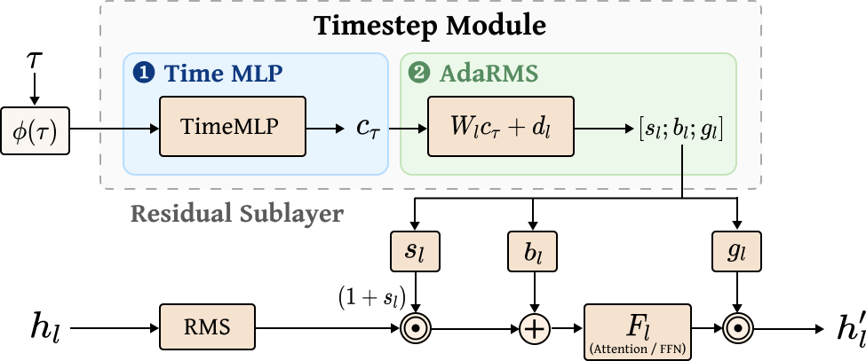
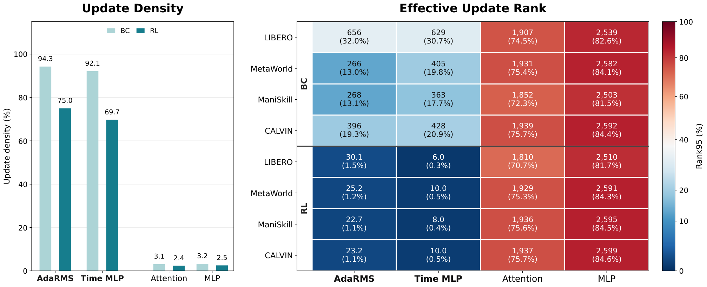
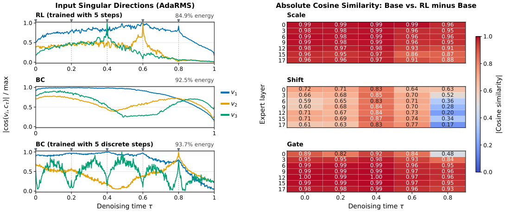
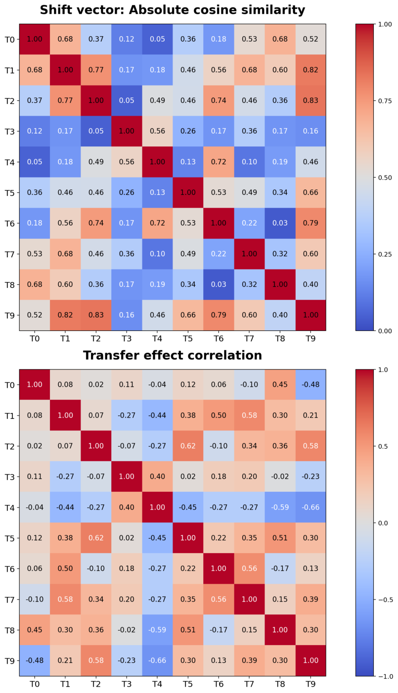

The Low-Rank Structure of VLA
Reinforcement Learning
Graduate School of Data Science, Seoul National University
TL;DR
Reinforcement learning (RL) in flow-based vision-language-action (VLA) models concentrates much of its effect in low-rank updates to the action expert’s Timestep Modules. These updates specialize to discrete denoising timesteps. Their shift directions predict task outcomes, reflect cross-task transfer, and support steering that improves RL policies without additional RL training.
What is this paper about?
Where does RL change a VLA policy, and how do those changes affect behavior? We study this question in parameter space, comparing RL and behavior cloning (BC) in flow-based action experts. Across π0.5 and GR00T N1.5/N1.6 on robot manipulation benchmarks, we find that Timestep Modules capture a disproportionate share of the performance gains from RL. We then examine how their updates encode task-related information and whether that information can improve policy behavior.
What are Timestep Modules?
In π0.5, a Time MLP and adaptive RMS normalization (AdaRMS) projections convert the denoising timestep into scale, shift, and gate vectors for each attention or feed-forward sublayer. These vectors depend only on the timestep, independent of the image, language instruction, or current task progress.

Where are the RL updates concentrated?
Both BC and RL update the Timestep Modules much more densely than attention and MLP layers. Their update structure differs: in π0.5, RL updates to the Timestep Modules have an effective rank of only about 6–30, compared with hundreds for BC. RL updates to attention and MLP layers remain high-rank.

Do these updates account for the performance gains?
Starting from each RL checkpoint, we keep the learned Timestep Modules and restore the remaining parameters to the base policy, or do the reverse. For π0.5, keeping only the Timestep Module updates recovers nearly all of the RL performance across four benchmarks. The effect varies by model: GR00T N1.5 retains a smaller fraction of the gain.
| Model / benchmark | Base | RL | Timestep Modules only | MLP + Attention only |
|---|---|---|---|---|
| π0.5 / LIBERO | 87.7 | 96.5 | 95.1 | 90.5 |
| π0.5 / ManiSkill | 42.2 | 89.1 | 87.5 | 49.4 |
| π0.5 / MetaWorld | 42.8 | 69.2 | 69.6 | 54.6 |
| π0.5 / CALVIN | 61.8 | 87.7 | 87.0 | 62.7 |
| GR00T N1.5 / LIBERO | 54.4 | 90.3 | 61.3 | 57.9 |
| GR00T N1.6 / LIBERO-Spatial | 75.6 | 85.0 | 84.8 | 84.6 |
“Only” specifies which RL updates are retained; all other parameters are restored to the base checkpoint. LIBERO averages Spatial, Object, and Goal, except for GR00T N1.6. Table 1
Why are the updates low-rank?
Standard BC samples continuous denoising timesteps, whereas RL trains at the discrete timesteps used during rollouts. In π0.5, RL specializes the Timestep Modules to these discrete inputs. Training BC with discrete timesteps produces similar specialization and low-rank updates, identifying the timestep schedule as a source of the structure.

Shift vectors change most distinctly
Scale and gate updates tend to align with their base outputs, largely rescaling existing directions. Shift updates are less aligned, introducing more distinct directions into the hidden states. This motivates examining what those directions encode.
What do the shift directions encode?
Episode outcomes
For each sublayer–timestep pair, we take the shift update Δb = bRL − bbase, project the corresponding input hidden states onto it, and average the scores over each episode. A regularized logistic regression probe combines these scores across sublayers and timesteps to predict success or failure.
Using a 70:30 split of tasks within each benchmark, the probes predict outcomes on held-out tasks for both base and RL π0.5 policies. ROC-AUC reaches 99.6% for the base policy on LIBERO-Spatial and ManiSkill, with performance varying across benchmarks and policies.
| Benchmark | Base policy | RL policy |
|---|---|---|
| LIBERO-Spatial | 99.6 | 96.6 |
| LIBERO-Object | 98.6 | 97.4 |
| LIBERO-Goal | 98.9 | 68.0 |
| ManiSkill | 99.6 | 98.3 |
| MetaWorld | 74.2 | 90.1 |
ROC-AUC measures prediction of episode outcomes, not policy success rate. Table 2
Shuffled-label controls
Probes trained with shuffled outcome labels yield near-chance ROC-AUC.
| Benchmark | Base policy | RL policy |
|---|---|---|
| LIBERO-Spatial | 46.5 ± 4.0 | 51.5 ± 3.9 |
| LIBERO-Object | 53.4 ± 6.3 | 47.2 ± 13.3 |
| LIBERO-Goal | 49.0 ± 3.5 | 52.6 ± 6.4 |
| ManiSkill | 51.8 ± 7.0 | 46.5 ± 9.3 |
| MetaWorld | 49.4 ± 4.8 | 49.4 ± 6.1 |
Relationships between tasks
We also train ten separate π0.5 policies on individual LIBERO-Spatial tasks. Tasks with similar shift-update directions tend to show similar cross-task transfer patterns. The mean task-wise Spearman correlation between the two similarity profiles is 0.504, ranging from 0.224 to 0.794.

Steering an already trained policy
Can these directions improve behavior? We select a sublayer–timestep pair using probing performance on the training tasks. When its hidden-state projection deviates from the successful-episode mean, we steer along the learned shift direction by the minimum amount needed to reach that mean.
This adaptive intervention improves the RL π0.5 policy by 2.0–4.0 percentage points across five benchmarks, outperforming matched-norm random directions. It uses probes and successful-episode statistics from the training split, without additional RL training.
| Benchmark | RL | Random steering | Shift steering | Gain (pp) |
|---|---|---|---|---|
| LIBERO-Spatial | 86.7 | 87.2 ± 0.3 | 90.0 | +3.3 |
| LIBERO-Object | 94.7 | 94.7 ± 0.0 | 96.7 | +2.0 |
| LIBERO-Goal | 90.7 | 90.7 ± 0.0 | 94.7 | +4.0 |
| ManiSkill | 90.0 | 88.4 ± 3.4 | 92.0 | +2.0 |
| MetaWorld | 66.7 | 64.1 ± 1.8 | 68.7 | +2.0 |
Evaluated on the 30% held-out task split used for probing. Gains are percentage-point differences from the RL policy. Table 3
BibTeX
@misc{oh2026lowrankstructurevla,
title={The Low-Rank Structure of VLA Reinforcement Learning},
author={Minjae Oh and Yoonah Park and Jongwon Lim and Yohan Jo},
year={2026},
eprint={2609.34599},
archivePrefix={arXiv},
url={https://arxiv.org/abs/2609.34599}
}